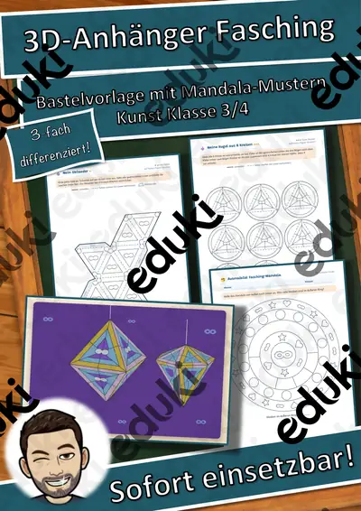
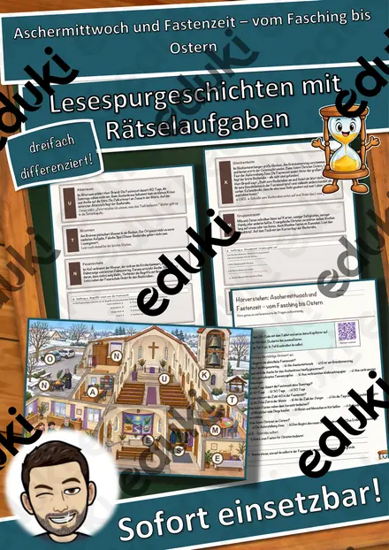
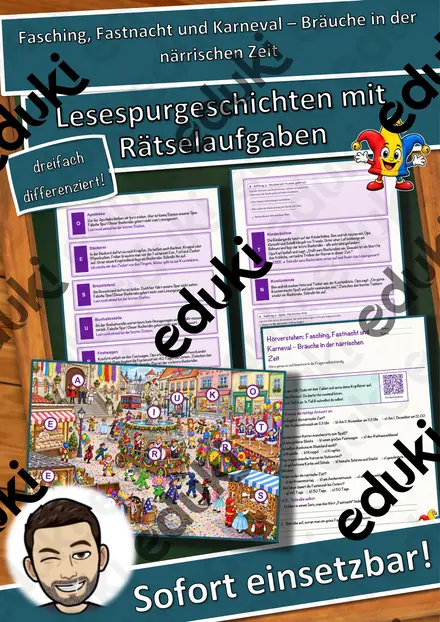
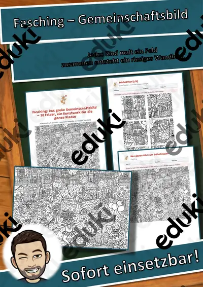
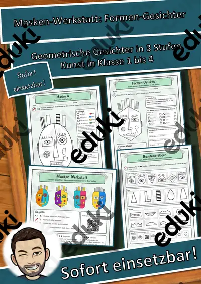

Karneval und Fasching: Arbeitsblätter für Klasse 1–6 (Sachunterricht)
Karneval, Fasching und Fastnacht sind regionale Bräuche, die Kunst, Musik und Sachunterricht verbinden. Kinder lernen Herkunft, Masken und Fastenzeit kennen.
Gearbeitet wird in der Regel an Verkleidung, Masken und Aschermittwoch, ergänzt um Fastenzeit, Narren und Umzüge.
Im Fach Sachunterricht gehört das Thema nach den Lehrplänen der Länder zum festen Programm, überwiegend in den Klassen 1 bis 6. Die Kinder beschreiben Bräuche im Fasching und gestalten Masken.
Wer Karneval und Fasching auf mehrere Stunden verteilt, startet mit Verkleidung, übt an Aschermittwoch und schließt mit Narren ab. Alle Blätter sind kopierfertig und enthalten Lösungen für die schnelle Kontrolle. Leistungsstarke und schwächere Lesende erhalten über die Lesespurgeschichten Texte in drei Stufen.
Aus unserem Katalog gehören 14 Materialien zu diesem Thema, darunter Rechenmosaik Paket Winter, Advent und Fasching, Masken-Werkstatt Materialpaket: 3 Hefte und Fasching: Das große Gemeinschaftsbild. Der Bestand umfasst 3 Lesespurgeschichten, 1 Lesespaziergang, 1 Bastelvorlage und 3 Lückentexte mit Hörverstehen und reicht über Klasse 1–7. Eine Maskenparade in der Klasse als Abschluss motiviert und lässt sich in einer Stunde vorbereiten.
Das gehört zum Thema
Passende Arbeitsblätter und Materialpakete

Rechenmosaik Paket Winter, Advent und Fasching: 4 Motive, lösen – kleben – ausmalen (Klasse 1–4)

Masken-Werkstatt Materialpaket: 3 Hefte – Geometrische Gesichter in 3 Stufen (Kunst, Klasse 1–4, Vorlagen + Bausteine)

3D-Anhänger Fasching – Oktaeder, Diamant und Kugel zum Ausmalen und Basteln, 3-fach differenziert (Klasse 3/4)

Aschermittwoch und Fastenzeit – vom Fasching bis Ostern – Lesespurgeschichte mit Rätselaufgaben (Klasse 6)

Lesespaziergang: Verkleiden und Feiern im Fasching – 3-fach differenziert (★/★★/★★★), Klasse 2–4

Fasching, Fastnacht und Karneval – Bräuche in der närrischen Zeit – Lesespurgeschichte mit Rätselaufgaben (Klasse 4)

Masken gestalten – Gesichter verwandeln – Lesespurgeschichte mit Rätselaufgaben (Klasse 5)

Karneval Lückentext mit Wortspeicher Hörverstehen und Suchsel

Aschermittwoch Lückentext mit Wortspeicher Hörverstehen und Suchsel

Karneval - Fasching - Fasnacht Lückentext mit Wortspeicher

Fasching: Das große Gemeinschaftsbild – 30 Felder, ein Kunstwerk für die ganze Klasse

Masken-Werkstatt Gefühle-Masken – Geometrische Gesichter in 3 Stufen (Kunst, Klasse 1–4, Vorlagen + Bausteine)

Masken-Werkstatt Muster-Masken – Geometrische Gesichter in 3 Stufen (Kunst, Klasse 1–4, Vorlagen + Bausteine)

Masken-Werkstatt Formen-Gesichter – Geometrische Gesichter in 3 Stufen (Kunst, Klasse 1–4, Vorlagen + Bausteine)
Häufige Fragen
Für welche Klassenstufe passen die Arbeitsblätter zu Karneval und Fasching?
Der Schwerpunkt liegt auf Klasse 4; insgesamt deckt die Auswahl (14 Titel) Klasse 1–7 ab. In der Beschreibung jedes Materials steht die empfohlene Stufe.
Welche Inhalte decken die Materialien zu Karneval und Fasching ab?
Die Materialien arbeiten an Verkleidung, Masken und Aschermittwoch und gehen dann weiter zu Fastenzeit, Narren und Umzüge. Vorab lohnt ein Blick in den Lehrplan des eigenen Bundeslandes.
Wie setze ich Karneval und Fasching im Unterricht ein?
Eine Maskenparade in der Klasse als Abschluss motiviert und lässt sich in einer Stunde vorbereiten. So entsteht aus den Blättern eine kleine Einheit, die sich auf zwei bis drei Stunden verteilen lässt.
Mehr Material nach Fach und Klasse
- Alle Materialien Kunst
- Arbeitsblätter Kunst Klasse 1
- Arbeitsblätter Kunst Klasse 2
- Arbeitsblätter Kunst Klasse 3
- Arbeitsblätter Kunst Klasse 4
- Arbeitsblätter Kunst Klasse 5
- Arbeitsblätter Kunst Klasse 6
- Unterrichtsmaterial Klasse 1
- Unterrichtsmaterial Klasse 2
- Unterrichtsmaterial Klasse 3
- Unterrichtsmaterial Klasse 4
- Unterrichtsmaterial Klasse 5
- Unterrichtsmaterial Klasse 6
Verwandte Lehrplanthemen
- Basteln, Falten und Werken (Kunst, Klasse 1–6)
- Jahreszeiten (Sachunterricht, Klasse 1–4)
- Bauernhof und Nutztiere (Sachunterricht, Klasse 1–4)
- Berufe und Berufswahl (Sachunterricht, Klasse 1–10)
- Dinosaurier und Urzeit (Sachunterricht, Klasse 1–5)